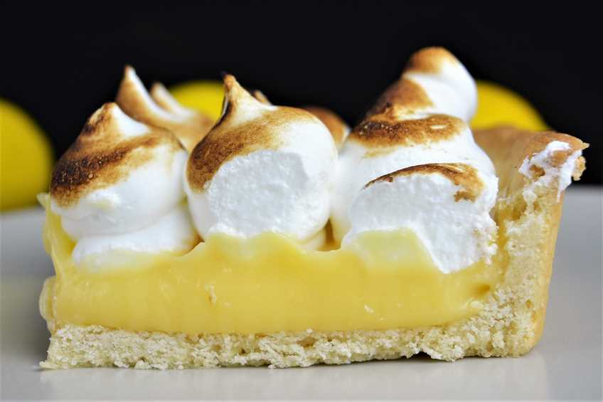

Lemon Pie

Tasty, sweet and refreshing, what else can you ask for?
Ingredients
- 1 cup white sugar
- 2 tablespoons all-purpose flour
- 3 tablespoons cornstarch
- ¼ teaspoon salt
- 1 ½ cups water
- 1 ½ cups water
- 2 lemons, juiced and zested
- 2 tablespoons butter
- 4 egg yolks, beaten
- 1 (9 inch) pie crust, baked
- 4 egg whites
- 6 tablespoons white sugar
Preparation Steps
- Preheat oven to 350 degrees F (175 degrees C).
- To Make Lemon Filling:
- In a medium saucepan, whisk together 1 cup sugar, flour, cornstarch, and salt.
- Stir in water, lemon juice and lemon zest. Cook over medium-high heat, stirring frequently, until mixture comes to a boil.
- Stir in butter. Place egg yolks in a small bowl and gradually whisk in 1/2 cup of hot sugar mixture.
- Whisk egg yolk mixture back into remaining sugar mixture. Bring to a boil and continue to cook while stirring constantly until thick.
- Remove from heat. Pour filling into baked pastry shell.
- To Make Meringue:
- In a large glass or metal bowl, whip egg whites until foamy.
- Add sugar gradually, and continue to whip until stiff peaks form.
- Spread meringue over pie, sealing the edges at the crust.
- Bake in preheated oven for 10 minutes, or until meringue is golden brown.
- Time to have a moment of joy!
This is a good option for a romantic moment.
Thanks for reading this, it was a fun and really tasty travel, see you until a next recipe!
Return To Top
Go Back